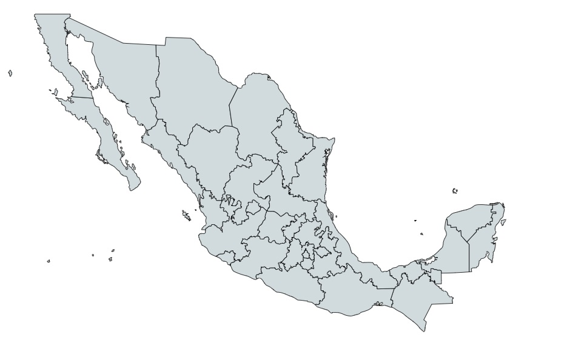

Conocida también como el guardián carnoso, la Siempreviva es una potencial planta herbácea la cual crece anualmente y en otros casos de tiempo bienal, entre los meses de julio y agosto. Es de color verde, totalmente glabra o lisa es decir lampiña. En cuanto a su tamaño, esta mide de 30 a 80 centímetros (cm) de alto, es decir, es una planta pequeña. Sus hojas son lineares y algunas otras lanceoladas, en otras palabras, son puntiagudas y delgadas.
Cabe mencionar que en su nacimiento, la Siempreviva tiene forma de roseta. Esta planta pequeña, tiende a estar pegada al suelo. Su tallo mantiene la forma de roseta una vez comienza a crecer. Ahora bien, de su altura en centímetros, los primeros 20 cm corresponden al tallo mientras que los restantes 50 o 60 metros integran sus pequeñas hojas. En el extremo de estas brotan pequeñas flores, las cuales florecen en grupos de dos o tres.
Usos Medicinales:
Contra-indicaciones:
No es recomendable utilizar la siempreviva si se padece de hiperacidez, gastritis, presión alta o si se encuentra embarazada.
